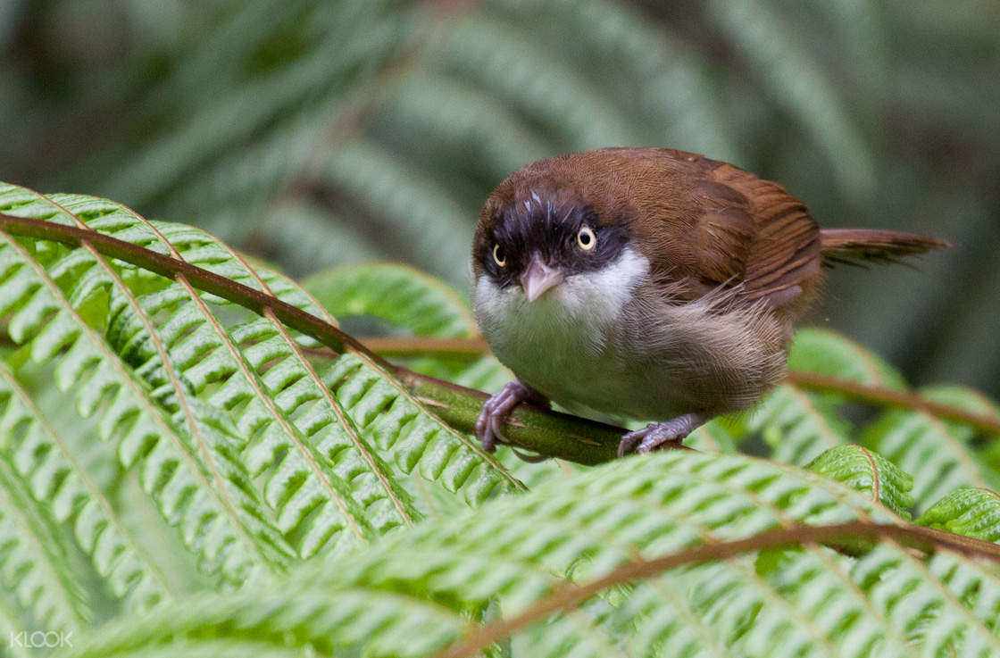
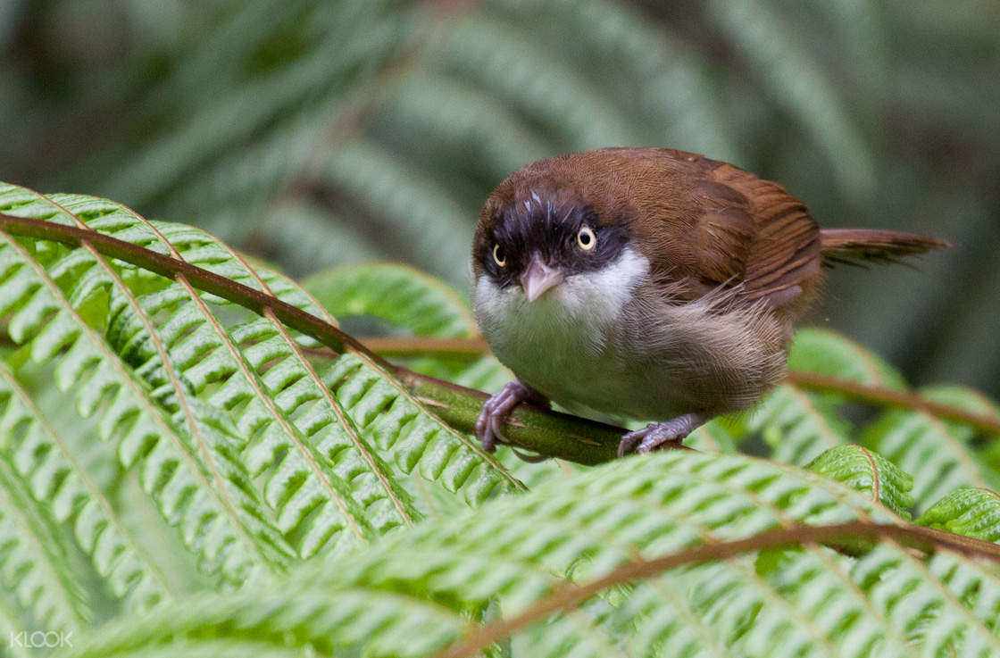
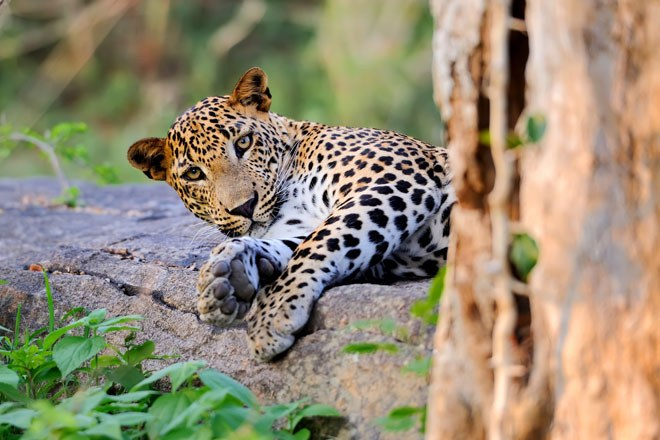

Introduction To Sri Lanka Wildlife
Wild life Locations in Sri Lanka
Sinharaja Forest
Nestled in the heart of Sri Lanka, the Sinharaja Forest Reserve stands as a verdant testament to the island's unparalleled biodiversity and ecological significance. Recognized as a UNESCO World Heritage Site, this enchanting tropical rainforest is a sanctuary of awe-inspiring beauty and a haven for nature enthusiasts seeking an immersive journey into the untouched wilderness.
Sinharaja, meaning "Lion's Kingdom," beckons with a rich tapestry of flora and fauna, including many species found nowhere else on Earth. Spanning approximately 8,864 hectares, this forest reserve is a haven for endemic and endangered species, making it a crucial hotspot for biodiversity conservation.
 

Udawalawa Forest
The Udawalawe Forest Reserve unfolds as a living canvas where nature's symphony orchestrates the rhythms of the wild. Stretching across 30,000 hectares, this natural haven is renowned for its remarkable population of Sri Lankan elephants, whose graceful presence against the backdrop of expansive grasslands creates an iconic spectacle. Beyond the majestic elephants, Udawalawe offers a diverse cast of wildlife characters—crocodiles basking in the sun, vividly colored birds dancing through the treetops, and graceful deer gracefully navigating the grassy terrain. Embarking on a safari adventure within the reserve unveils the unfolding drama of nature, providing a front-row seat to the intricate tales of survival and coexistence.
Udawalawe stands as a testament to Sri Lanka's commitment to wildlife conservation. Here, the delicate balance between human communities and the untamed inhabitants of the reserve is carefully managed, showcasing a model of harmonious coexistence. As visitors traverse the well-maintained trails, they not only witness the breathtaking beauty of the wild but become part of a legacy that prioritizes the preservation of natural habitats. Udawalawe, with its boundless landscapes and diverse fauna, invites all who enter its realm to connect with the essence of the wild, fostering a deep appreciation for the intricate web of life that thrives within its pristine boundaries.


Kadulla Forest
Kaudulla National Park unfolds as an untouched sanctuary where nature's elegance takes center stage. Spanning over 6,900 hectares, this pristine wilderness is a refuge for a diverse array of wildlife, offering a unique opportunity for visitors to witness the untamed beauty of the island. Kaudulla is particularly celebrated for its elephant gatherings, a breathtaking spectacle where herds of these gentle giants traverse the expansive landscapes, creating an awe-inspiring panorama against the lush backdrop.
Kaudulla is not merely a haven for elephants; it is a biodiversity marvel, with its rich tapestry of ecosystems providing a habitat for numerous species. Visitors embarking on a safari adventure through the park's well-established trails encounter not only the iconic elephants but also a mosaic of wildlife—graceful deer, playful monkeys, and an array of vibrant bird species. The rhythmic symphony of the forest, coupled with the captivating visual displays, creates an immersive experience that lingers in the hearts of those who seek the serenity and natural beauty of Kaudulla National Park.
Bundala Forest
Bundala National Park emerges as a sanctuary where wetland wonders and biodiversity seamlessly coexist. Encompassing over 6,200 hectares, this pristine coastal reserve is renowned for its expansive lagoons, intertidal mudflats, and lush thorny scrublands, creating an ideal habitat for a diverse array of avian species and other wildlife. Bundala stands as a testament to the delicate balance between nature and conservation, inviting visitors to explore its rich landscapes and witness the intricate dance of life within its boundaries.
Bundala is a haven for bird enthusiasts, with its wetlands serving as a crucial stopover for migratory birds. The park is home to an impressive variety of avian species, including flamingos, pelicans, and the endangered greater adjutant. Beyond the vibrant birdlife, Bundala hosts an array of reptiles, amphibians, and mammals, offering a comprehensive wildlife experience. As visitors embark on guided safaris, they are treated to the sight of elephants roaming near water sources, crocodiles basking in the sun, and the breathtaking backdrop of coastal scenery that defines the unique charm of Bundala National Park.


| Animal Name | Image | Interesting Facts |
|---|---|---|
| Elephant |

|
Elephants are known for their exceptional memory and intelligence. Studies have shown that elephants can remember and recognize individual humans, even after many years. They also exhibit problem-solving skills, self-awareness, and strong social bonds within their herds. The complexity of their communication and ability to navigate across vast distances makes elephants one of the most intelligent and fascinating creatures in the animal kingdom. |
| Leopard |  | Leopards are known for their incredible strength and agility. Pound for pound, leopards are one of the strongest climbers among big cats and are capable of carrying prey twice their weight up into the treetops. They often hoist their kills into the branches to protect them from scavengers like lions or hyenas. This behavior not only safeguards their meal but also allows them to dine without interruptions from other predators. Leopards' climbing abilities make them highly versatile hunters and contribute to their success in a variety of habitats. |
| kingfishers |

|
Kingfishers are skilled hunters with a unique method of catching their prey. When hunting for fish, a kingfisher will perch on a branch or hover over the water, then dive into the water with incredible speed and accuracy. The moment of entry is so swift and precise that the bird creates very little disturbance in the water, increasing its chances of catching fish. Kingfishers have specialized, sharp bills adapted for gripping fish, and their excellent underwater vision aids in locating prey. This remarkable hunting technique makes kingfishers one of the most efficient and fascinating bird species. |
| Explore the wonders of our planet's diverse wildlife | ||